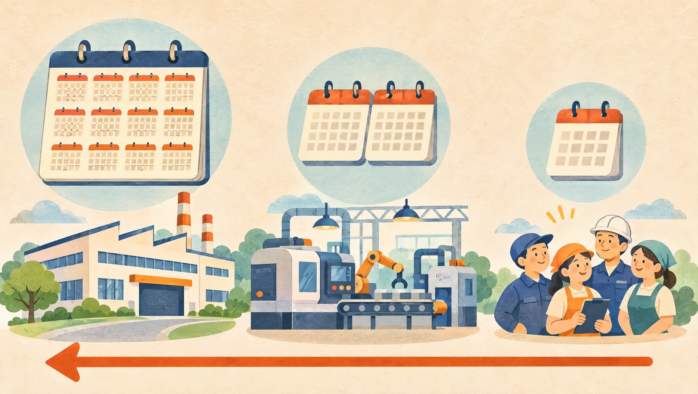

q
quantity = כמות
כמה מוצרים יצאו. התפוקה. (גם "תפוקה כוללת", או TP.)
איך מפעל הופך עובדים ומכונות למוצרים, ומה קורה כשמוסיפים עוד עובד ועוד עובד. הכל מוסבר מאפס, עם סיפורים, ניסויים, שאלות מבחן פתורות ורשימת מלכודות. לא צריך לדעת כלום מראש.
בסרטון הזה נלמד את פונקציית הייצור: איך מפעל הופך עובדים ומכונות למוצרים.
תחשבו על מטבח. מכניסים מצרכים, עושים לפי מתכון, ויוצאת עוגה. פונקציית הייצור היא המתכון של המפעל.
היא אומרת כמה הכי הרבה מוצרים אפשר לייצר מכמות מסוימת של עובדים ומכונות, בטכנולוגיה של היום.
מושג ראשון: תפוקה ממוצעת, AP. כמה מייצר עובד אחד בממוצע. מחלקים את כל המוצרים במספר העובדים.
מושג שני: תפוקה שולית, MP. כמה הוסיף העובד האחרון שהצטרף. בכמה עלתה התפוקה כשהוא הגיע.
ועכשיו הלב של השיעור. בפרדס בגודל קבוע, מוסיפים עוד ועוד קוטפים.
בהתחלה כל קוטף מוסיף יותר מהקודם. אחר כך כל קוטף מוסיף פחות. ובסוף, יותר מדי קוטפים מפריעים זה לזה, והתפוקה יורדת.
זה חוק התפוקה השולית הפוחתת. הוא קורה כי משהו נשאר קבוע: הפרדס לא גדל.
במפעל האופניים: העובד הראשון מוסיף 4 יחידות, השני 8, השלישי 12. אחר כך 8, 3, ובסוף מינוס 5.
שימו לב: כשהתוספת יורדת, התפוקה הכוללת עדיין עולה. היא יורדת רק כשהתוספת שלילית.
השולית והממוצעת עובדות כמו ממוצע ציונים. ציון חדש מעל הממוצע מעלה אותו, וציון מתחת לממוצע מוריד אותו.
לכן קו התפוקה השולית חוצה את קו הממוצעת, בדיוק בשיא של הממוצעת.
טווח קצר: חלק מגורמי הייצור קבועים. טווח ארוך: אפשר לשנות הכל. זה תלוי במפעל, לא בלוח השנה.
ואיך מחלקים עובדים בין שני שדות? כל עובד הולך לשדה שבו הוא מוסיף הכי הרבה.
שלושה עובדים לשדה א׳, ואחד לשדה ב׳. סך הכל 46 יחידות. זה הכי הרבה שאפשר.
באתר תמצאו ניסויים, שאלות מבחן פתורות, ורשימה של מלכודות. בהצלחה!

תחשבו על מטבח. מכניסים מצרכים (קמח, ביצים, תנור, אופה), עושים לפי מתכון, ויוצאת עוגה. כל מפעל עובד בדיוק ככה:
במשפט אחדפונקציית הייצור היא "המתכון" של המפעל: היא אומרת כמה הכי הרבה מוצרים יוצאים מכמות מסוימת של עובדים ומכונות.
השיעור כולו עונה על שאלה אחת פשוטה: מה קורה כשמוסיפים עוד עובד? התשובה המפתיעה: בהתחלה כל עובד חדש מוסיף הרבה, אבל מנקודה מסוימת כל עובד חדש מוסיף פחות. בסוף עובד נוסף אפילו מזיק. זה "חוק התפוקה השולית הפוחתת", והוא הלב של השיעור.
בשיעור יש הרבה אותיות. כל אות היא קיצור של מילה באנגלית. אם תזכרו את המילה, תזכרו את האות.
"שולי" = "האחרון שנוסף". בכלכלה המילה "שולי" חוזרת כל הזמן. תמיד היא אומרת: מה קורה כשמוסיפים עוד יחידה אחת.
כל דבר שעוזר לייצר נקרא גורם ייצור. יש שלושה סוגים:
אותו רעיון, בקטן. אות קטנה (q, f) = מפעל אחד. אות גדולה (Y, F) = כל המשק. מטרת המפעל היא מקסימום רווח, והצעד הראשון בדרך לשם הוא לדעת: אם אקנה כך וכך עובדים ומכונות, כמה מוצרים אקבל?
בהגדרה יש שלוש מילות מפתח, ובמבחן שואלים בדיוק עליהן:
הפונקציה מראה כמה הכי הרבה אפשר לייצר. אם המפעל מבזבז, הוא מייצר פחות, אבל זה לא מה שהפונקציה מראה.
הפונקציה נכונה לטכנולוגיה של היום. שיפור טכנולוגי משנה את הפונקציה עצמה: מאותם עובדים ומכונות יוצא יותר.
אין בזבוז. הפונקציה כוללת רק שילובים שבהם כל עובד וכל מכונה מנוצלים בצורה הכי טובה.
קשר לשיעור 1: זה בדיוק כמו עקומת התמורה. שם, נקודה על העקומה = הכי הרבה שאפשר, ונקודה בפנים = בזבוז. גם פונקציית הייצור מתארת רק את "הקצה", את המקסימום.
במאפייה יש גורם ייצור אחד בלבד: שעות עבודה (L). בכל שעה מכינים 2 עוגות. אז המתכון הוא:
| שעות (L) | עוגות (q) | כמה הוסיפה השעה האחרונה |
|---|---|---|
| 1 | 2 | 2 |
| 2 | 4 | 2 |
| 3 | 6 | 2 |
| 4 | 8 | 2 |
| 5 | 10 | 2 |
כל שעה נוספת מוסיפה תמיד 2 עוגות. לכן הגרף הוא קו ישר, וקוראים לזה פונקציה לינארית. בעוד רגע נראה שבמציאות זה כמעט אף פעם לא ככה.
כל המוצרים, חלקי מספר העובדים.
מאפייה: 6 עוגות ב־3 שעות → 6 ÷ 3 = 2
בכמה עלתה התפוקה, חלקי בכמה עלו העובדים.
מאפייה: שעה רביעית: מ־6 ל־8 עוגות → (8 − 6) ÷ 1 = 2
דימוי שעוזרAP הוא כמו ממוצע הציונים שלכם. MP הוא כמו הציון במבחן האחרון. כל ציון חדש משנה את הממוצע, ובחלק 10 נראה בדיוק איך.
מחלקים. אם מ־2 עובדים ל־4 עובדים התפוקה עלתה מ־12 ל־32: MP = (32 − 12) ÷ (4 − 2) = 20 ÷ 2 = 10. כל עובד חדש הוסיף בממוצע 10.
כשהתפוקה תלויה גם בעובדים וגם במכונות, q = f(K, L), התפוקה השולית של L נמדדת כשהמכונות נשארות קבועות. מוסיפים רק עובד, ולא נוגעים במכונות. הסימן ∂q / ∂L ("נגזרת חלקית") אומר בדיוק את זה: רק L זז. בלטינית: ceteris paribus, "כל השאר קבוע".
למה זה חשוב? אם מוסיפים גם עובד וגם מכונה, אי אפשר לדעת מי מהם הוסיף את התפוקה. כדי למדוד את התרומה של העובד, חייבים להשאיר את כל השאר קבוע.

נחשוב על קטיף בפרדס בגודל קבוע. מוסיפים עוד ועוד קוטפים. מה קורה?
הקוטפים הראשונים מתחלקים בעבודה: אחד על הסולם, אחד מוריד סלים. כל אחד מוסיף יותר מהקודם.
הפרדס לא גדל. כל קוטף נוסף מוצא פחות לימונים. הוא עדיין מוסיף, אבל פחות מהקודם.
יותר מדי אנשים. הם נתקעים, מפריעים, מפילים סולמות. עוד קוטף מוריד את סך התפוקה.
למה זה קורה?כי משהו נשאר קבוע: הפרדס. ככל שיש יותר עובדים על אותו פרדס, לכל עובד יש פחות עצים. אם היו מגדילים גם את הפרדס, החוק לא היה חל.
שימו לב לניסוח: החוק לא אומר שהתפוקה הכוללת יורדת. הוא אומר שהתוספת יורדת. בשלב 2 התפוקה הכוללת עדיין עולה, רק לאט יותר. זו המלכודת מספר 1 במבחן.
תקופה שבה המפעל יכול לשנות רק חלק מגורמי הייצור. השאר קבועים.
גורם משתנה: אפשר לשנות אותו בטווח הקצר. למשל מספר העובדים.
תקופה ארוכה מספיק כדי לשנות את כל גורמי הייצור.
גורם קבוע: אפשר לשנות אותו רק בטווח הארוך. למשל מבנה המפעל.

הנקודה החשובה: "טווח קצר" הוא לא מספר קבוע של חודשים. הוא תלוי במפעל. במפעל מהתמונה, החלק שהכי קשה לשנות הוא המבנה, שמשתנה רק כל 20 שנה. לכן:
באותו מפעל (עובדים: כל יום, מכונות: כל שנתיים, מבנה: כל 20 שנה). בחרו תקופה:
לחצו על תקופה.

במפעל יש מכונות קבועות (זה טווח קצר). אפשר לשנות רק את מספר העובדים. הנה מה שקורה:
| עובדים (L) | אופניים (q) | AP = q ÷ L | MP = Δq ÷ ΔL | שלב |
|---|---|---|---|---|
| 0 | 0 | – | – | |
| 1 | 4 | 4 ÷ 1 = 4 | 4 − 0 = 4 | ת״ש עולה |
| 2 | 12 | 12 ÷ 2 = 6 | 12 − 4 = 8 | ת״ש עולה |
| 3 | 24 | 24 ÷ 3 = 8 | 24 − 12 = 12 | ת״ש עולה |
| 4 | 32 | 32 ÷ 4 = 8 | 32 − 24 = 8 | ת״ש פוחתת |
| 5 | 35 | 35 ÷ 5 = 7 | 35 − 32 = 3 | ת״ש פוחתת |
| 6 | 30 | 30 ÷ 6 = 5 | 30 − 35 = −5 | ת״ש שלילית |
כלל זהבהתפוקה הכוללת מקסימלית כשהתפוקה השולית מגיעה ל־0. כל עוד ת״ש חיובית, עוד עובד מוסיף. ברגע שהיא שלילית, עוד עובד מזיק. כאן: 5 עובדים, 35 אופניים.
זוכרים? AP = ממוצע הציונים, MP = הציון במבחן החדש. נסו בעצמכם:
עשיתם 3 מבחנים, והממוצע שלכם 80. מה הציון במבחן הרביעי?
בגרף: קו ה־MP חוצה את קו ה־AP בדיוק בנקודת השיא של AP. משמאל לחיתוך MP מעל AP, ומימין MP מתחת ל־AP. זה נכון בכל פונקציית ייצור. גם בדוגמה השנייה מהמצגת (מפעל עם 10 עובדים): MP מעל AP עד בערך עובד 8, שם AP מגיע לשיא (בערך 204), ומעובד 9 MP מתחת ל־AP והממוצעת יורדת.

| L | q | MP |
|---|---|---|
| 1 | 13 | 13 |
| 2 | 25 | 12 |
| 3 | 35 | 10 |
| 4 | 43 | 8 |
| L | q | MP |
|---|---|---|
| 1 | 11 | 11 |
| 2 | 20 | 9 |
| 3 | 27 | 7 |
| 4 | 31 | 4 |
מסדרים את כל התפוקות השוליות מהגבוהה לנמוכה, ולוקחים את 4 הראשונות:
למה לא כולם לשדה הטוב?4 עובדים בשדה א׳ נותנים רק 43. העובד הרביעי שם מוסיף 8, אבל בשדה ב׳ עובד ראשון מוסיף 11. בגלל חוק התפוקה השולית הפוחתת, מתישהו כדאי לעבור לשדה השני.
נסו לענות לבד, ורק אז פתחו את הפתרון. השאלות בנויות כמו במבחן קשה: עם מלכודות.
AP = q ÷ L = 35 ÷ 5 = 7
MP = (35 − 32) ÷ (5 − 4) = 3
טעות נפוצה: לחלק 35 ב־5 גם עבור MP. MP הוא רק התוספת של העובד החמישי.
לא נכון. במפעל האופניים, בין עובד 3 לעובד 5 MP יורד (12 → 8 → 3), אבל התפוקה הכוללת עולה (24 → 32 → 35). התפוקה הכוללת יורדת רק כש־MP שלילי.
לא נכון. AP יורד כש־MP < AP, גם אם MP חיובי. עובד 5: MP = 3 > 0, אבל 3 < 8, ולכן AP ירד מ־8 ל־7.
לא נכון. החוק מדבר על מצב שבו רק גורם אחד גדל והשאר קבועים (טווח קצר). הסיבה לחוק היא בדיוק הגורם הקבוע: יותר עובדים על אותו פרדס. אם מגדילים הכל יחד, זו כבר שאלה אחרת (טווח ארוך).
מסדרים את ה־MP מהגבוה לנמוך: 13 (א), 12 (א), 11 (ב), 10 (א), 9 (ב), 8 (א), 7 (ב), 4 (ב).
חמשת הראשונים: 3 בשדה א׳, 2 בשדה ב׳ → q = 35 + 20 = 55
בדיקה: 4+1 נותן 43 + 11 = 54, 2+3 נותן 25 + 27 = 52. שניהם פחות מ־55. ✓
טווח קצר. ב־3 שנים אפשר לשנות עובדים ומכונות, אבל לא את המבנה. כל עוד יש לפחות גורם אחד קבוע, זה טווח קצר. הטווח הארוך במפעל הזה: 10 שנים ומעלה.
הטריק: אם AP = q ÷ L, אז q = AP × L.
| L | AP | q = AP × L | MP |
|---|---|---|---|
| 1 | 10 | 10 | 10 |
| 2 | 12 | 24 | 14 |
| 3 | 11 | 33 | 9 |
| 4 | 9 | 36 | 3 |
בדיקה עם הכלל: עובד 2: MP = 14 > 10 → AP עלה ✓. עובד 3: MP = 9 < 12 → AP ירד ✓.
התפוקה השולית היא הנגזרת: MP = dq / dL = 10 − 2L
התפוקה מקסימלית כש־MP = 0: 10 − 2L = 0 → L = 5, ואז q = 50 − 25 = 25.
וגם: AP = q ÷ L = 10 − L. לכל L > 0 מתקיים 10 − 2L < 10 − L, כלומר MP מתחת ל־AP, ולכן AP יורד כל הזמן.
נכון. AP = 2L ÷ L = 2 ו־MP = 2 בכל נקודה. כש־MP קבוע ושווה ל־AP, הממוצע לא זז. בפונקציה הזו אין תפוקה שולית פוחתת.
| מושג | נוסחה | במילים פשוטות |
|---|---|---|
| פונקציית ייצור | q = f(K, L) | הכי הרבה שאפשר לייצר מכמות נתונה של גו״י, בטכנולוגיה הקיימת |
| ברמת המשק | Y = A · F(L, K, N) | A = טכנולוגיה, כופלת את הכל |
| תפוקה ממוצעת | AP = q ÷ L | כמה מייצר עובד בממוצע |
| תפוקה שולית | MP = Δq ÷ ΔL | כמה הוסיף העובד האחרון (השאר קבוע) |
| חוק הת״ש הפוחתת | גורם אחד גדל, השאר קבועים | מנקודה מסוימת, כל עובד מוסיף פחות |
| MP מול AP | MP > AP ⇒ AP↑ ; MP < AP ⇒ AP↓ | הציון החדש מושך את הממוצע. נפגשים בשיא של AP |
| שיא התפוקה הכוללת | MP = 0 | עוד עובד כבר לא מוסיף |
| טווח קצר / ארוך | חלק קבוע / הכל משתנה | תלוי במפעל, לא בלוח השנה |
| הקצאה בין שדות | מסדרים MP מהגבוה לנמוך | כל עובד הולך לאן שהוא מוסיף הכי הרבה |
בשיעור הבאאיך המפעל מחליט כמה לייצר.